الرئيسية
/
الصف الثاني الثانوي
/
Unit 1
/
Lessons 1.4 & 1.5
🌟 المفردات الأساسية (Key Vocab)
📝 المفردات الهامة (Important Vocab)
📚 التعريفات والمترادفات (Definitions & Syn/Ant)
🔗 المتلازمات وحروف الجر (Collocations)
💡 ملاحظات لغوية (Language Notes)
⚡ شرح القواعد (Grammar Masterclass)
📖 القصة المصورة (Storybook)
🎯 اختبار الدرس الشامل (Quiz)
4. LANGUAGE NOTES & WORD FAMILIES (ملاحظات لغوية)
💡 الملاحظات اللغوية: دراسة متعمقة للكلمات، المتلازمات المصاحبة (Goes with)، مشتقات الكلمة (Word Family) مع أمثلة وسياقات، والتفريق بين المتشابهات (Don't Mix).
✅ Goes with (تأتي مع):
collectivist values: قيم ذات نزعة جماعيةcollectivist culture: ثقافة ذات نزعة جماعية
👥 Word Family (عائلة الكلمة):
Word
Meaning
Example
collective (adj) جماعي / مشترك
The community took collective responsibility for the problem.
collectivism (n) النزعة الجماعية
Collectivism encourages people to support their group.
collectivist (adj) ذو نزعة جماعية
Collectivist cultures often value family support.
❌ Don't mix (انتبه للفرق):
• collectivist = giving priority to the group and its shared interests.collective = done, owned, or shared by all the members of a group.
✅ Goes with (تأتي مع):
school counseling: الإرشاد النفسي المدرسيcounseling services: خدمات الإرشاد النفسي
👥 Word Family (عائلة الكلمة):
Word
Meaning
Example
counsel (v) ينصح / يقدم المشورة
Trained teachers counsel students who are experiencing stress.
counseling (n) الإرشاد النفسي
Counseling can help adolescents manage stress.
counselor (n) مرشد نفسي
The school counselor listened carefully to the student.
❌ Don't mix (انتبه للفرق):
• counseling = professional support that may continue over a period of time.advice = an opinion or suggestion about what someone should do.
✅ Goes with (تأتي مع):
a decisive factor: عامل حاسمplay a decisive role: يؤدي دوراً حاسماً
👥 Word Family (عائلة الكلمة):
Word
Meaning
Example
decide (v) يقرر
The committee will decide which programme to support.
decision (n) قرار
Exercising regularly was a wise decision .
decisive (adj) حاسم
Family support was a decisive factor in her recovery.
❌ Don't mix (انتبه للفرق):
• decisive = capable of determining the final result.important = having great value, but not necessarily determining the result.
✅ Goes with (تأتي مع):
individualistic approach: نهج فردي النزعة
👥 Word Family (عائلة الكلمة):
Word
Meaning
Example
individual (n/adj) فرد / فردي
Each individual has a free opinion.
individualism (n) النزعة الفردية
Individualism values personal decisions.
individualistic (adj) فردي النزعة
Some people are individualistic .
❌ Don't mix (انتبه للفرق):
• individualistic = valuing personal independence and individual choice.selfish = caring only about yourself and not about other people.
✅ Goes with (تأتي مع):
interact with others: يتفاعل مع الآخرينfactors interact: تتفاعل العوامل
👥 Word Family (عائلة الكلمة):
Word
Meaning
Example
interact (v) يتفاعل
Students interact with one another politely.
interaction (n) تفاعل
Social interaction can improve emotional well-being.
interactive (adj) تفاعلي
The teacher used an interactive learning activity.
❌ Don't mix (انتبه للفرق):
• interact = communicate with or affect one another.react = respond to an action, event, or situation.
✅ Goes with (تأتي مع):
rank something first: يصنف شيئاً في المرتبة الأولىrank according to importance: يرتب حسب الأهمية
👥 Word Family (عائلة الكلمة):
Word
Meaning
Example
rank (v/n) يرتب أو يصنف - مرتبة
Students ranked academic pressure as the main cause of stress.
ranking (n) ترتيب - تصنيف
The school improved its national ranking .
ranked (adj) مرتب - مصنف
The report contained a ranked list of the main causes.
❌ Don't mix (انتبه للفرق):
• rank = place several people or things in a particular order.rate = judge the quality or value of something, often by giving it a score.
✅ Goes with (تأتي مع):
rural areas: المناطق الريفيةrural schools: المدارس الريفية
👥 Word Family (عائلة الكلمة):
Word
Meaning
Example
rural (adj) ريفي
Some rural schools lack counselling services.
rurally (adv) في منطقة ريفية
Rurally located communities may be difficult to reach.
rurality (n) الطابع الريفي
The area's rurality can make transport difficult.
❌ Don't mix (انتبه للفرق):
• rural = connected with the countryside.remote = far away from towns, cities, or other people (A rural place is not necessarily remote).
✅ Goes with (تأتي مع):
targeted support: دعم موجهa targeted campaign: حملة موجهة
👥 Word Family (عائلة الكلمة):
Word
Meaning
Example
target (n) هدف / فئة مستهدفة
Teenagers were the main target of the campaign.
target (v) يستهدف
The programme targets students experiencing stress.
targeted (adj) موجه / مستهدف
Rural schools need targeted mental-health support.
❌ Don't mix (انتبه للفرق):
• targeted = directed at a particular group, problem, or purpose.general = intended for everyone and not directed at one particular group.
✅ Goes with (تأتي مع):
urban areas: المناطق الحضريةurban development: التنمية الحضرية
👥 Word Family (عائلة الكلمة):
Word
Meaning
Example
urban (adj) حضري
Urban schools had better access to counseling services.
urbanize (v) يحول إلى منطقة حضرية
The government plans to urbanize the developing area.
urbanization (n) التحضر / التوسع العمراني
Rapid urbanization can place pressure on public services.
❌ Don't mix (انتبه للفرق):
• urban = connected with a town or city.suburban = connected with a residential area on the edge of a town or city.
✅ Goes with (تأتي مع):
a key variable: متغير رئيسيa dependent variable: متغير تابع
👥 Word Family (عائلة الكلمة):
Word
Meaning
Example
vary (v) يتغير / يختلف
Stress levels vary from one student to another.
variable (n/adj) متغير / قابل للتغير
Sleep was an important variable in the study.
variation (n) اختلاف / تفاوت
The survey revealed considerable variation in stress levels.
❌ Don't mix (انتبه للفرق):
• variable = a factor or quantity that can change.variety = a collection or range of different types of things.
⚡ الدليل الشامل لقواعد "حالات الشرط" (The "IF" Conditionals Masterclass)
💡 سحر الـ IF: استمتع بشرح تفاعلي متكامل لقواعد وحالات الشرط مع مستر أحمد عاصم. يمكنك مشاهدة فيديو الشرح التفصيلي، والكبسولات السريعة (Shorts)، والتنقل بين الشرائح التفاعلية الـ 14، والاستماع لنطق كل الأمثلة مع التقييم الفوري 🎯.
✨ Easy Peasy Ya Englezeey • تريكة القواعد في ثوانٍ
✨ Easy Peasy Ya Englezeey • كبسولة القواعد في ثوانٍ
1. سحر الـ "IF": الدليل الشامل لقواعد وحالات الشرط
2. لماذا ندرس قاعدة "IF" أصلاً؟
3. خارطة طريق "IF": الأنواع الأربعة وجدول المقارنة
4. المستوى الأول: العالم الحقيقي
5. عدّاد الاحتمالات & الأفعال الناقصة
6. صيغ الأمر وحالات In case التقديرية
7. المستوى الثاني: عالم الخيال
8. شفرات Had و Were والافتراضات غير الحقيقية
9. المستوى الثالث: آلة الزمن والندم
10. الوحش: التوأم السلبي Unless والبدائل المتقدمة
11. أسرار الحذف والتقديم (Inversion)
12. الحالة المختلطة والتطبيقات الخاصة
13. خريطة الإنقاذ السريعة ومقارنة الحالات
14. التحدي النهائي وخاتمة سحر الـ IF
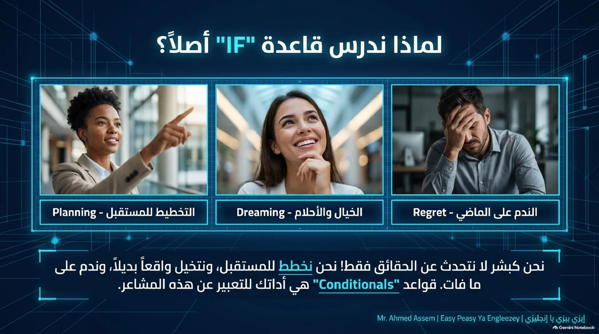
🔍 تكبير الشريحة
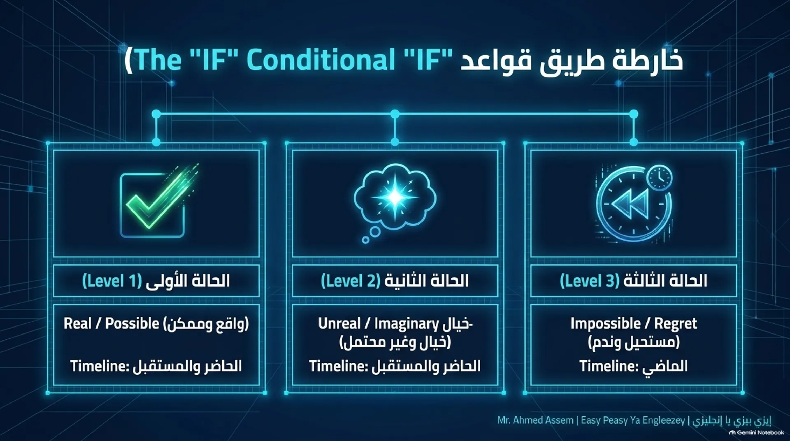
🔍 تكبير الشريحة
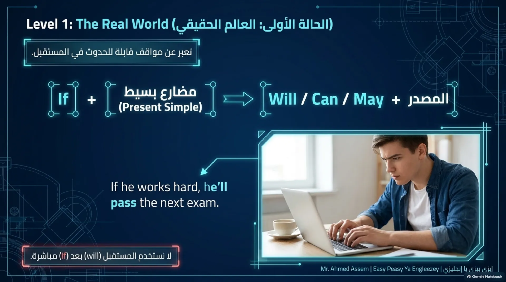
🔍 تكبير الشريحة
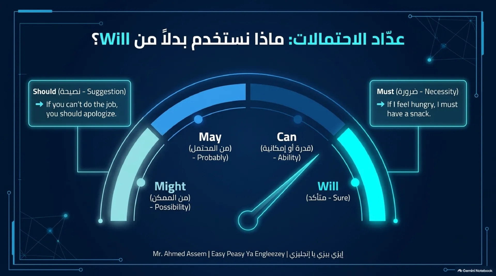
🔍 تكبير الشريحة
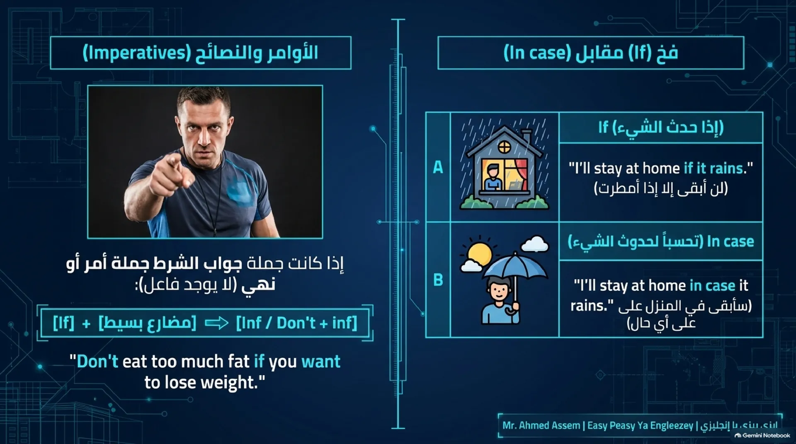
🔍 تكبير الشريحة
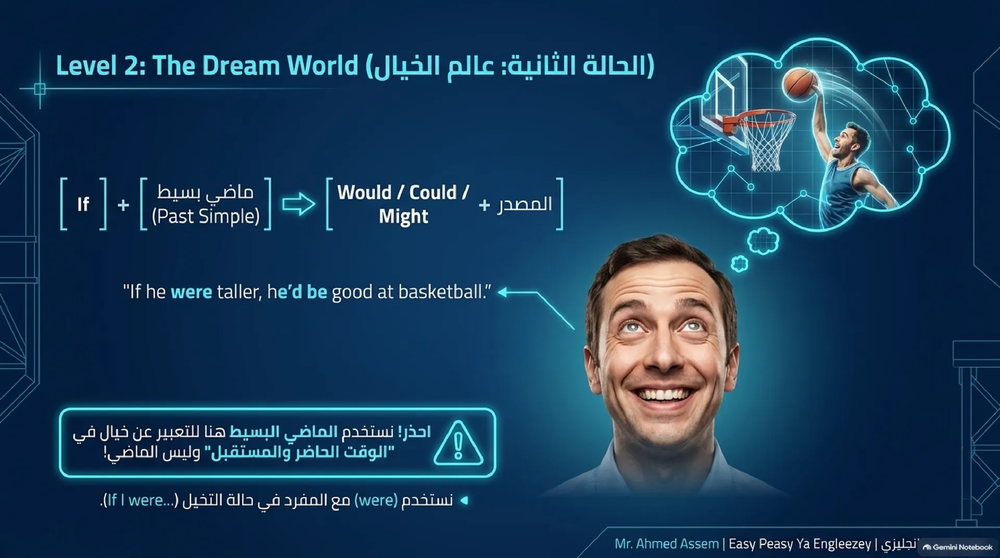
🔍 تكبير الشريحة
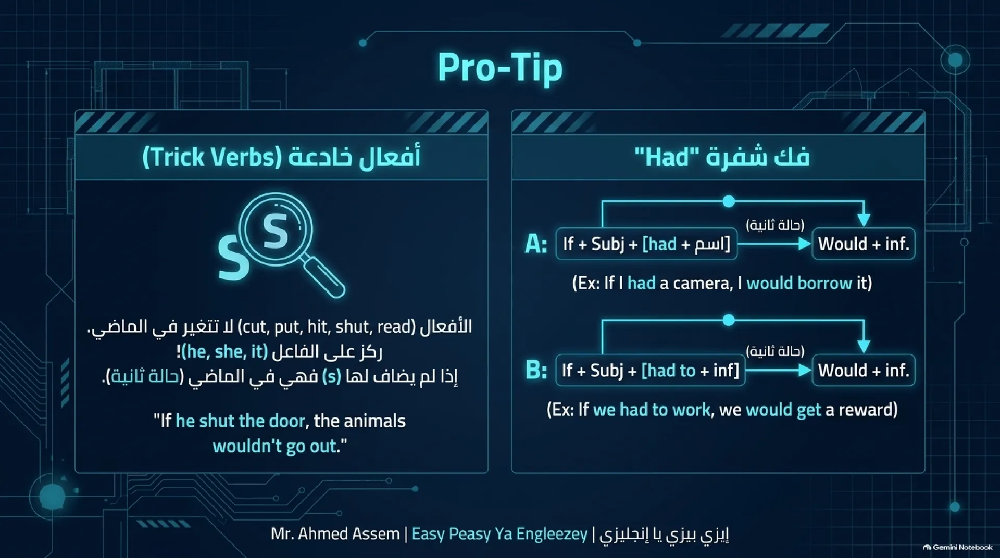
🔍 تكبير الشريحة
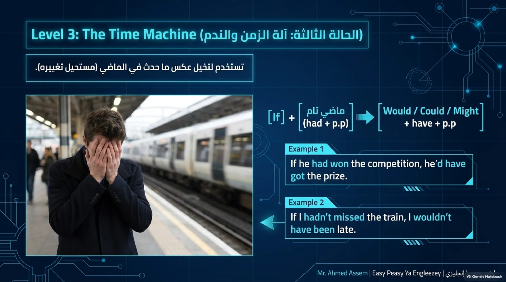
🔍 تكبير الشريحة
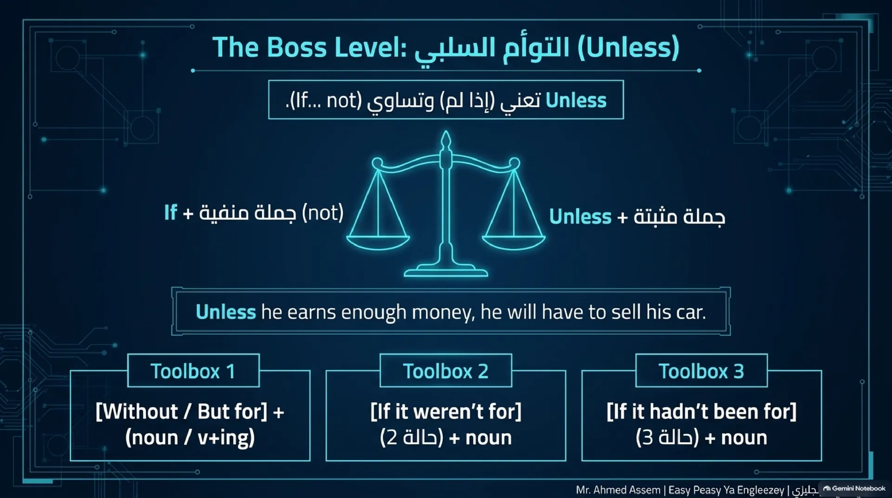
🔍 تكبير الشريحة
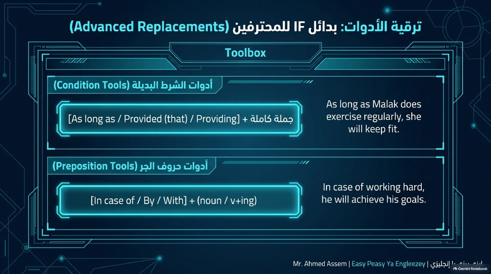
🔍 تكبير الشريحة
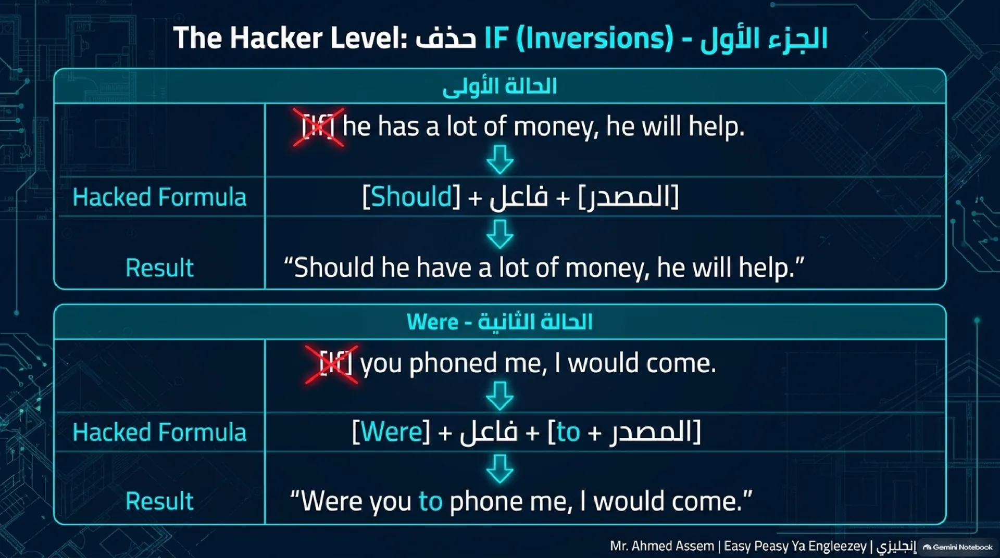
🔍 تكبير الشريحة
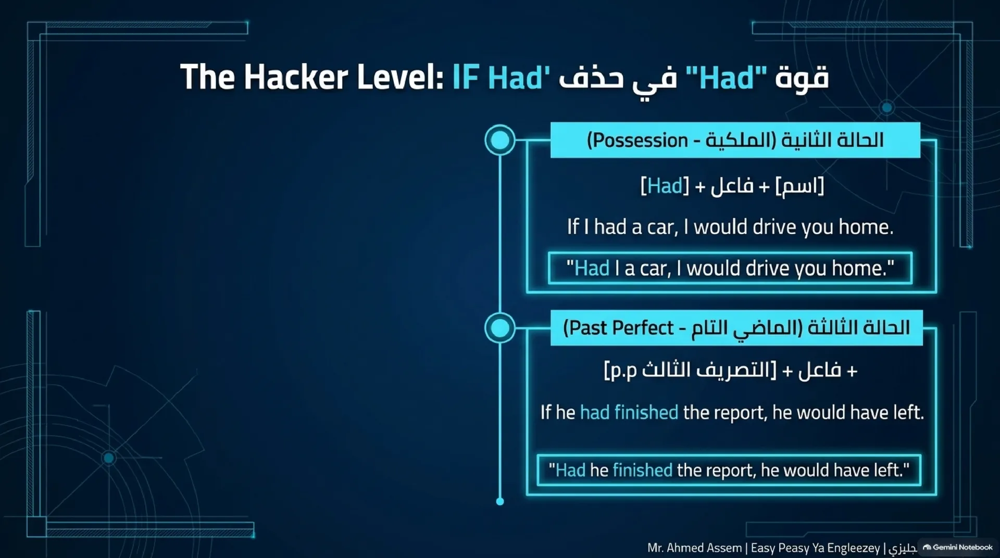
🔍 تكبير الشريحة
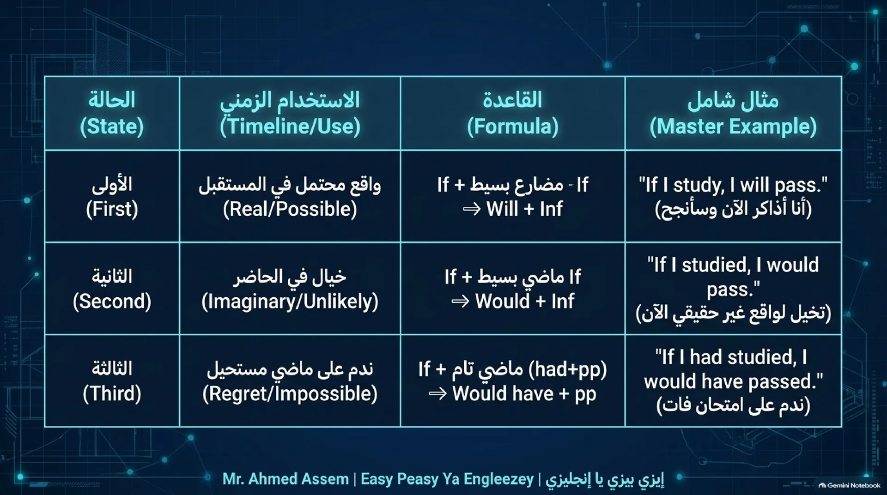
🔍 تكبير الشريحة
📚 القراءة التفاعلية المصورة (SB Pages 14 & 15 - Reading Text: Understanding Mental Health)
💡 تعليمات القراءة: استمتع بقراءة نص الوحدة من خلال الكتاب التفاعلي. يمكنك تشغيل القارئ الصوتي التلقائي (Auto Storyteller) للاستماع إلى النص ومتابعة الترجمة والمفردات اللغوية لكل مشهد، أو الضغط على زر الاستماع في أي صفحة.
🖼️ Scene 1 of 4
A comprehensive health survey across five Egyptian governorates
📖 Mental Health & Teen Life
Page 1 / 4
A nationwide school health survey done in Egypt in 2023 gathered data from 450 teenagers aged between 14 and 17, drawn from both urban and rural schools across five governorates. The study aimed to identify the primary sources of stress among teenagers and to examine the coping strategies they most commonly adopted. Its findings show a complex picture of modern teenage life, in which academic pressure, digital habits, and social expectations interact in ways that are often difficult to separate.
💡 الترجمة:
أجرى مسح صحي مدرسي شامل على مستوى الجمهورية في مصر عام 2023 لجمع بيانات من 450 مراهقاً تتراوح أعمارهم بين 14 و 17 عاماً من مدارس حضرية وريفية عبر خمس محافظات. هدفت الدراسة إلى تحديد المصادر الرئيسية للتوتر والضغط النفسي بين المراهقين ودراسة استراتيجيات التكيف الأكثر شيوعاً التي تبنوها. تظهر النتائج صورة معقدة لحياة المراهقين المعاصرة حيث يتفاعل الضغط الدراسي والعادات الرقمية والتوقعات الاجتماعية بطرق يصعب فصلها.
nationwide (على مستوى الجمهورية)
survey (مسح / استطلاع)
governorates (محافظات)
coping strategies (استراتيجيات التكيف)
academic pressure (الضغط الدراسي)
⬅️ الصفحة السابقة
▶️ القارئ التلقائي (Auto Storyteller)
الصفحة التالية ➔
🎯 اختبار الدرس الشامل (Lesson Comprehensive Quiz)
اختبر فهمك لمفردات الدرس ومتلازماته وقواعده من خلال هذا الاختبار التفاعلي:
🔊
جارٍ تحميل السؤال...
السؤال التالي ➡️